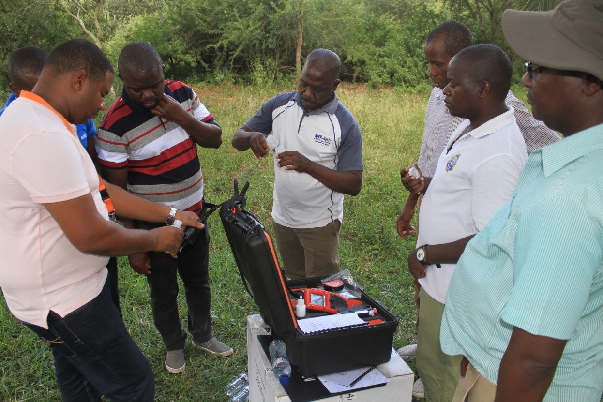
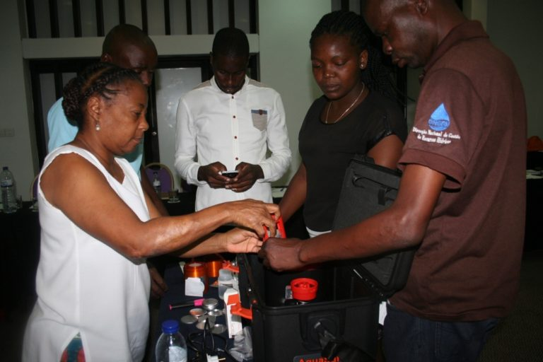
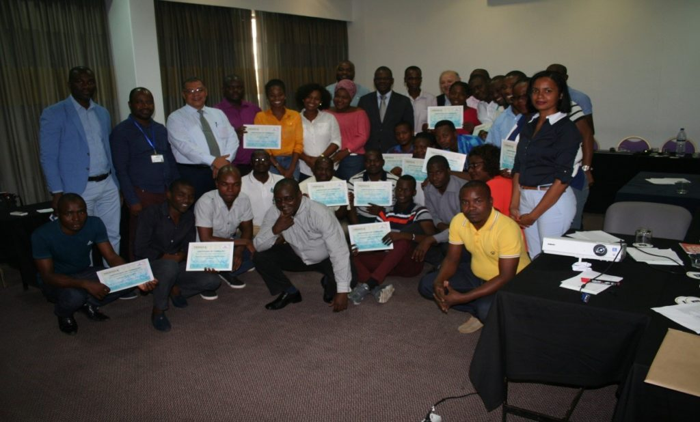

Melhoria da Qualidade da Água no País

Triónica Moçambique forma técnicos da Direcção Nacional de Gestão de Recursos Hídricos para manuseamento de Kits de Análise de Qualidade da Água.
Decorreu nos dias 02 a 13 do passado mês de Abril, na sala Pemba do Hotel Tivoli, na Cidade de Maputo, a formação sobre uso dos Kits de Análise de Qualidade da Água, orientada pela Empresa Triónica Moçambique Lda., no âmbito do Contrato Público firmado entre ambas instituições para fornecimento dos mesmos Kits.
A formação contou com a presença de 32 técnicos em representação das diversas Administrações Regionais de Águas do País e foi dirigida pelos formadores George Atongo, Flávio Canudo e Arlindo Nhavotso técnicos da Triónica Moçambique Lda.

Durante o período da formação, os formandos tiveram aulas teóricas e práticas sobre manuseamento de Kits de Análise da Qualidade da Água, essas últimas que decorreram nas Estações de Tratamento de Água do Rio Infulene, Pequenos Libombos e Mozal.
Na primeira fase da formação, os técnicos tiveram a oportunidade de trabalhar com os Kits Metalyser HM1000, AquaSafe MSL25, Sonda Multi-Parâmetros e Fotómetro.
Para Abu Jamal, técnico da ARA Sul, a aquisição dos Kits e formação sobre o manuseamento dos mesmos veio a trazer uma mais valia na ARA a qual pertence, pois, os Kits trazem consigo um avanço tecnológico que irá facilitar o trabalho no campo e contenção de custos, uma vez que com os mesmos poderão fazer a recolha, análise das amostras e obter dados em curto espaço de tempo o que não acontecia com os equipamentos que já dispunham.
Olinda Matola, técnica da ARA Centro, disse na ocasião que os Kits fornecidos pela Triónica Moçambique vêm enriquecer o trabalho dos técnicos da sua ARA visto que irão trabalhar com o Aquamite mais actualizado que dispõe de mais funções em relação ao Aquamite que dispunham na ARA a qual pertence.

Segundo Eng.º José Malaço membro do Projecto Nacional de Desenvolvimento de Recursos Hídricos a formação é benéfica na medida em que poderá melhorar o trabalho de todos técnicos da DNGRH e das ARAS´s na análise da qualidade de água existentes a nível do país.
O último dia da formação contou com a presença do Eng.º. Messias Macie, Director Nacional da DNGRH, Eng.º António Saraiva Morais, Director Geral da Triónica Moçambique Lda., entre outros membros que desejaram testemunhar a entrega dos Certificados de Participação na Formação de Manuseamento de Kits de Análise de Qualidade de Água aos técnicos da DNGRH e das ARA´s.